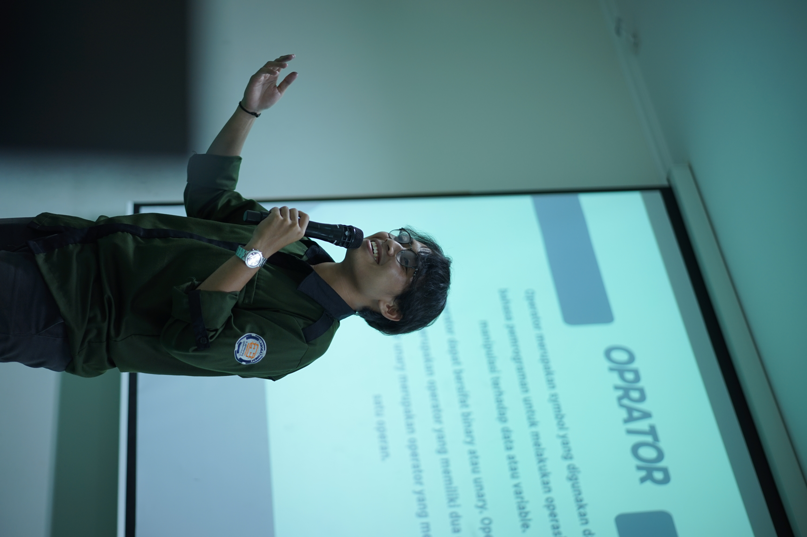

Diko Cesartista

Ringkasan
Saya adalah seorang pekerja keras yang memiliki jiwa kompetitif tinggi, saya memiliki passion terhadap ilmu komputer khususnya pada bidang web developer.
Edukasi
- IPA - SMA Negeri 7 Yogyakarta
- S1 Informatika - Universitas Ahmad Dahlan
Pengalaman Kerja
Skills
- Backend Programming: ★★★★★
- Public Speaking: ★★★★★
- Teamwork: ★★★★★
Awards and Certifications
- Top 50 Capstone Project on Bangkit Academy
Other